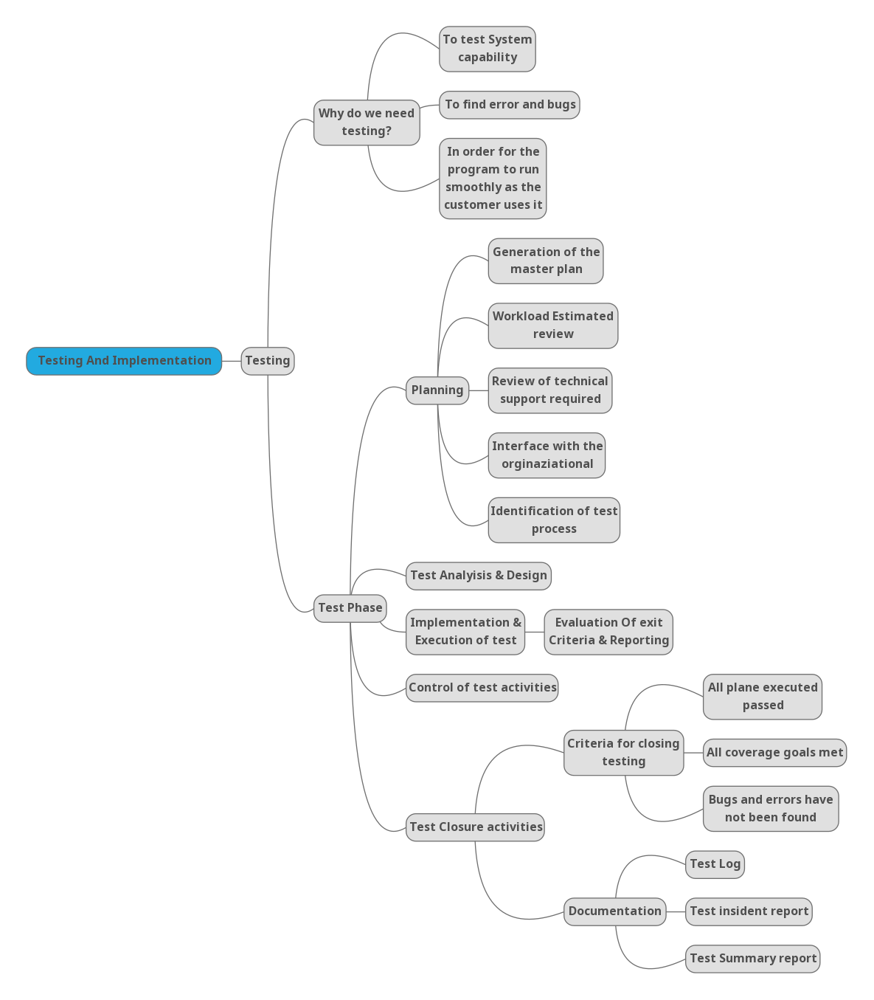
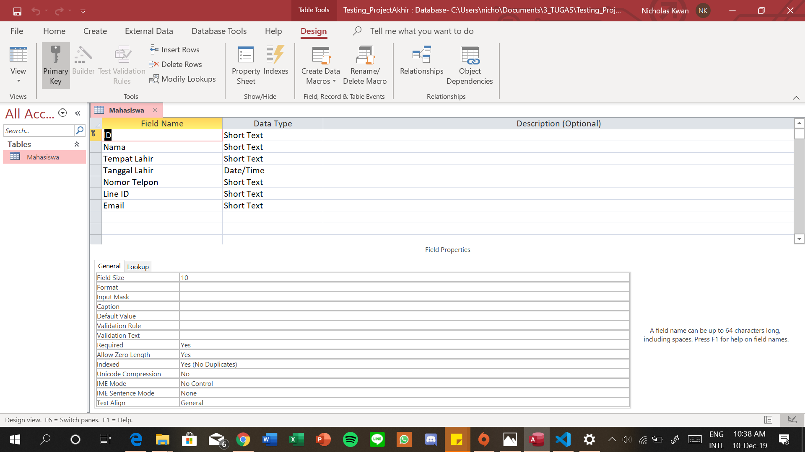
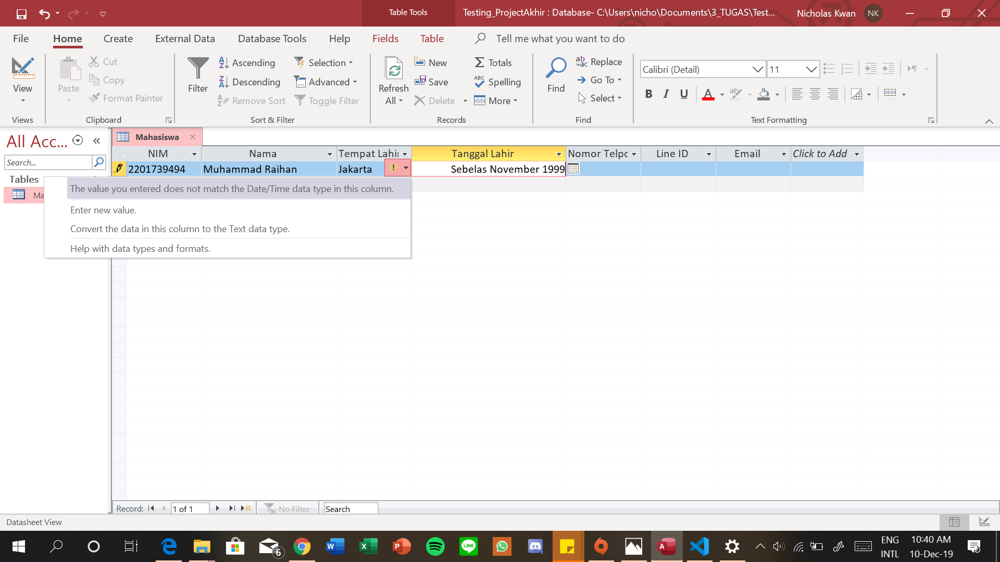
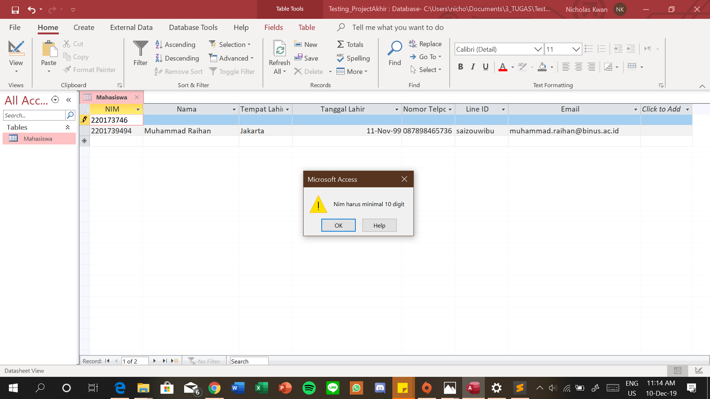
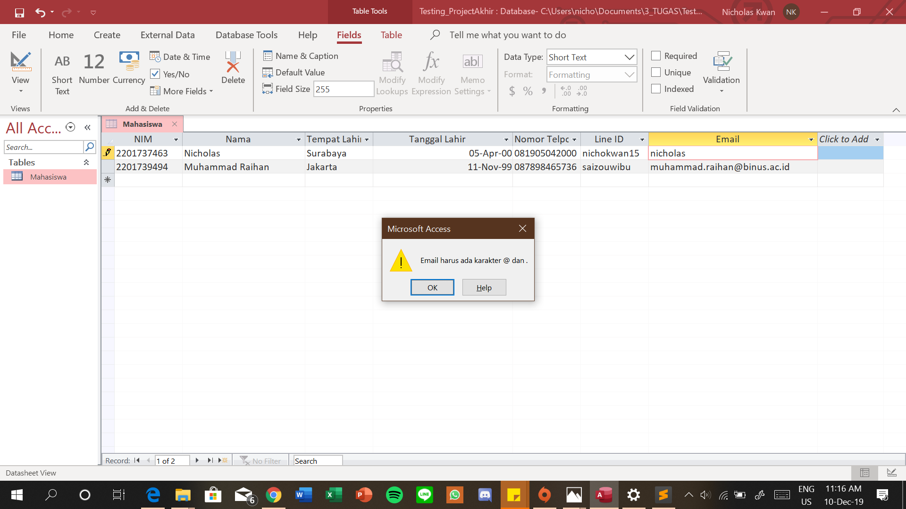
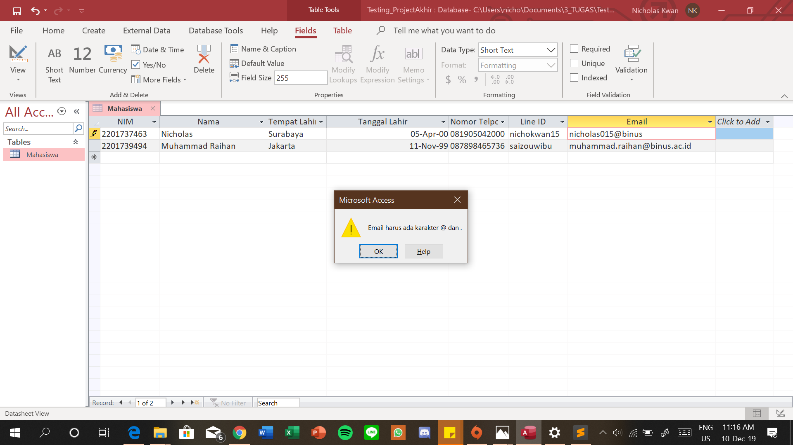

Introduction
Hai semuanya! Kami, mahasiswa Binus University sedang melakukan project Testing and System Implementation. Pada project ini, kami akan menguji database yang kita telah buat dengan menggunakan Microsoft Access. Dalam testing ini, kami menggunakan metode pengujian Repetition Testing.Dibawah ini, kami melampirkan sebuah mind map yang akan kami lampirkan pada gambar di bawah ini:
Testing Activities
Pertama-tama, kami membuat tabel dan field di dalam database. Dengan keterangan field sebagai berikut:
Setelah membuat tabel dan field, kami mencoba untuk mengisi 1 row dalam tabel yang kita telah buat, dengan keterangan gambar sebagai berikut:
|  | Saat memasukkan 1 row kedalam database, kami mencoba untuk mengisi field dengan isi yang berbeda dari ketentuan tipe data yang telah ditentukan saat membuat table. Pada gambar disamping, kami mengisi data menggunakan huruf, tetapi ketentuan tipe data yang kami buat menggunakan tipe data Date. Selain field tanggal lahir, kami juga melakukan pengetesan terhadap field-field lainnya yang kami sudah buat ketentuan validasinya. Seperti: NIM dan alamat email. |
Pada pengetesan berikutnya, kami melakukan testing field validation pada field NIM, dimana panjang karakter untuk NIM harus 10 digit. Field tersebut menggunakan variabel varchar(10) dimana panjang karakter yang di input tidak dapat lebih dari 10. Yang kita lakukan pada fase ini adalah coba untuk input NIM dengan panjang karakter dibawah 10. Saat kami menekan tombol Enter, maka muncul Error message yang mengingatkan bahwa panjang karakter NIM harus 10 digit. |
 |
Untuk field email, kami menggunakan validation rule bahwa alamat email harus mengandung karakter '@'' dan '.'. Jika tidak ada kedua karakter tersebut maka akan muncul error window seperti dibawah ini:
|  |  |
Pada test pertama, kami mencoba untuk melakukan pengetesan dengan memasukan alamat email tanpa kedua simbol '@' dan '.' yang menyebabkan munculnya error window yang mengingatkan bahwa email harus memiliki karakter @ dan . |
Pada test kedua, kami mencoba untuk melakukan pengetesan dengan memasukkan alamat email dengan simbol '@' namun tidak menulis simbol '.' pada alamat email yang membuat keluarnya error window yang sama. |